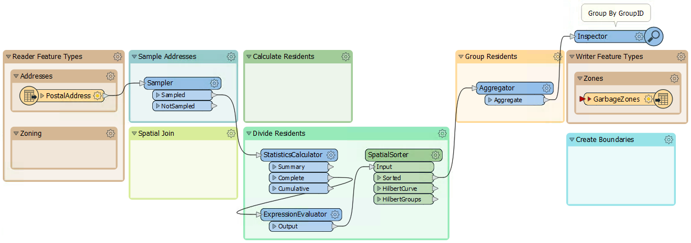
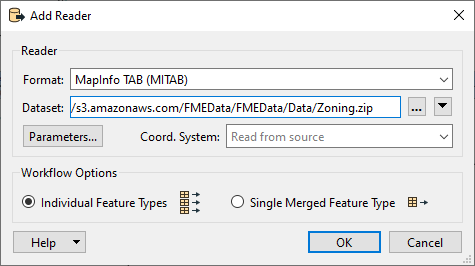
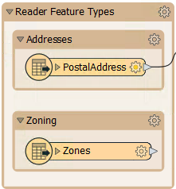
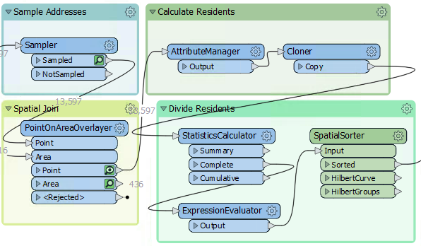

After completing this lesson, you’ll be able to:
Here, we continue with a project to redefine garbage collection schedules.
In the first exercise, we used various transformers to divide addresses into five groups. Now, the task is to refine that work by estimating the number of residents per address based on the zone type it falls within:
1) Open Workspace
Open your workspace from the previous exercise.
Save a copy of the workspace with a new date or version number. For example, if you saved the previous workspace as GarbageCollection-05-18-2023.fmw, save a copy named GarbageCollection-05-19-2023.fmw for editing.
Alternatively, you can open the starting workspace.

The remaining transformers in the "Transformers" bookmark are these:
2) Add Reader
The first task is to identify which planning zone each address falls inside. We need to read the zoning data and carry out a spatial join. To read a new dataset of data in a different format requires a new reader.
So, select Readers > Add Reader from the menu bar. When prompted, enter the following parameters:
| Reader Format | MapInfo TAB (MITAB) |
| Reader Dataset |
https://s3.amazonaws.com/FMEData/FMEData/Data/Zoning.zip (C:\FMEData\Data\Zoning.tab) |

FME adds a reader to the Navigator window and a feature type to the canvas. Move the feature type into the Zoning bookmark:

3) Create Spatial Join
To carry out a spatial join, we'll use a PointOnAreaOverlayer transformer, a type of join called Point-in-Polygon.
So, move the PointOnAreaOverlayer transformer from the "Transformers" bookmark to the "Spatial Join" bookmark. Connect the newly added Zoning data to the Area port and the output from the Sampler to the Point port:

Run the translation, ignore the Invalid Transformer Parameters dialog that pops up, and click Run. This dialog pops up because we have previously run the translation to the Aggregator, but now we have broken that connection. We will fix it in a bit.
Click on the PointOnAreaOverlayer's Point output port to view the data in the Visual Preview window. View both the Graphics and Table view. The overlay and attribute merging should cause each address to be given a zone name and category from the underlying zone.
4) Calculate Residents
The next step is to set how many residents live at a specific address according to its zoning type.
We know that:
| Zone Begins With | Zone Type | Residents |
|---|---|---|
| RS | Single Family | 2 |
| RT | Two Family | 4 |
| RM | Multiple Family | 12 |
| CD | Comprehensive | 8 |
| C | Commercial | 1 |
| Any other zone | 0 |
For example, zones RS-1, RS-2, and RS-3 are all single-family zones, and we assume two adults per address. This assumption makes it slightly more complicated because we need to match a zone type using a "begins with" string comparison.
This match can be done using an AttributeManager with Conditional Values.
This step is slightly complex, but luckily, the AttributeManager inside the "Transformers" bookmark is already set up for this purpose. So move the AttributeManager into the "Calculate Residents" bookmark and connect it to the PointOnAreaOverlayer's Point output port:

Your features will have a new attribute called Persons that estimtes how many people live at each address based on its zone.
5) Create Residents
We now have approximated the number of residents per address. However, we must use that number in a way that will affect the output. The simplest way to do this is to create multiple copies of each address, one for each resident.
For example, we'll create eight address points for an address with eight residents.
We can do this with a Cloner transformer. So, move the Cloner transformer from the "Transformers" bookmark to the "Calculate Residents" bookmark. Connect the AttributeManager to the Cloner's input and its output to the StatisticsCalculator:

The Cloner is configured to create <Persons> copies of the original addresses.
6) Run Translation
Ensure an Inspector is still attached to the Aggregator transformer and run the translation. The output should be five groups of point features again, but in a different pattern than the end of the previous exercise:

7) Write the Output
Now, to write some output. Connect the Aggregator output to the GarbageZones output feature type and re-run the workspace.
Your writer feature type should look something like this:

Congratulations. Now, you have a dataset of addresses grouped by their new garbage collection zone. The next exercise will turn these points into non-overlapping polygons designating the zones.